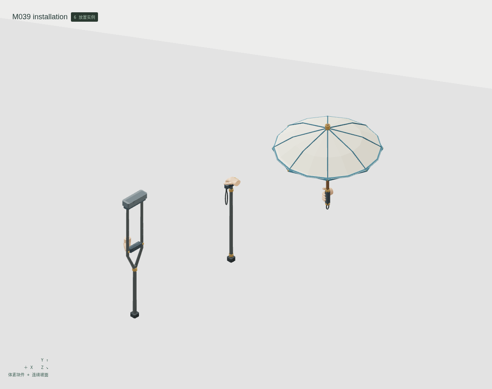
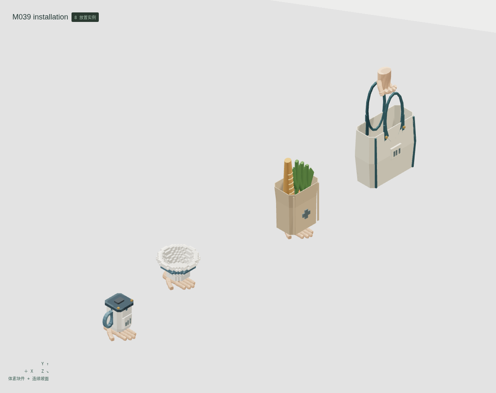
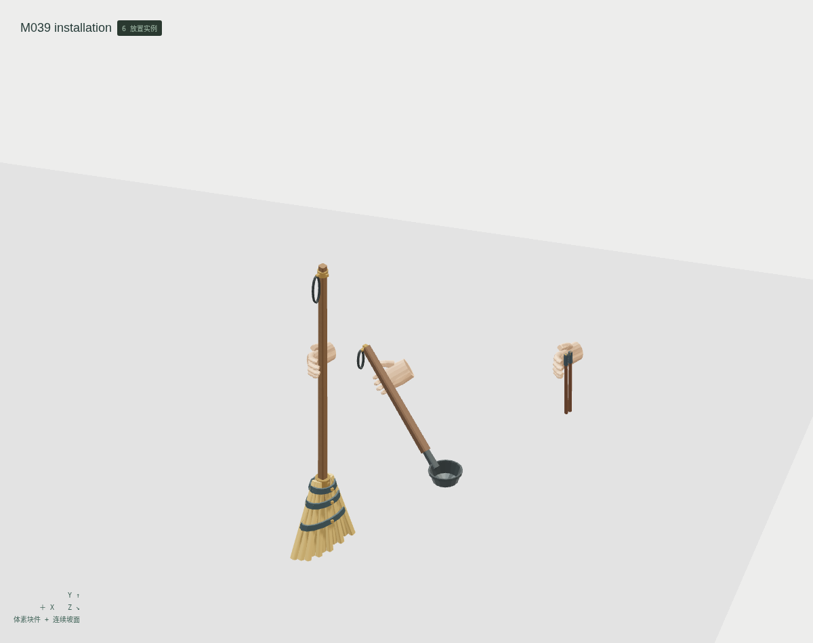
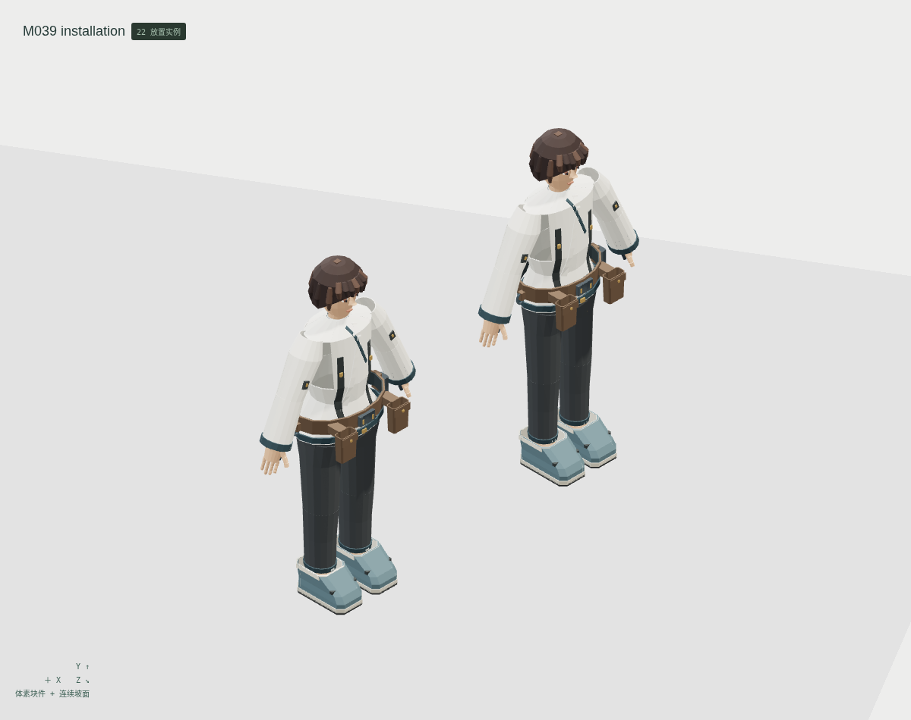
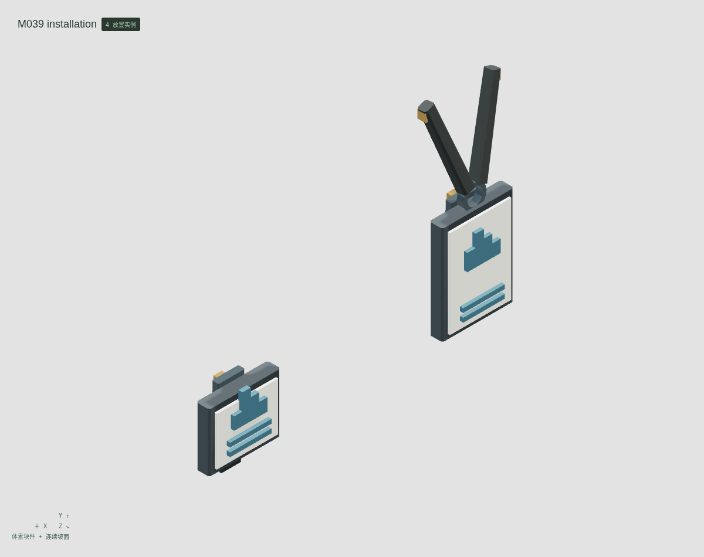

<!doctype html><meta charset="utf-8"><style>*{box-sizing:border-box}body{margin:0;background:#e2e4df;color:#263c34;font:20px system-ui}header,footer{padding:26px 34px}h1{margin:0 0 12px;font-size:32px}main{display:grid;grid-template-columns:1fr 1fr}figure{margin:0;border:1px solid #bec5bd;background:#eceeea}img{display:block;width:100%}figcaption{padding:14px 24px}figure:last-child{grid-column:1/3;margin:0 25%}</style><header><h1>云山 M039 · 工具腰带、职业牌与角色持物</h1>12 个参考条目 · 11 个新增母版 + 1 个共用引用 · 24 种形态<br>最小细节体素；伞面、斜柄、带环与器壁使用连续网格</header><main><figure><figcaption>伞 / 手杖 / 腋拐 · 独立有限握姿</figcaption></figure><figure><figcaption>购物袋 / 食品纸袋 / 共用碗 / 有把杯</figcaption></figure><figure><figcaption>平行双筷 / 斜柄勺 / 扫帚</figcaption></figure><figure><figcaption>成人 A / B · 真实内搭与工具腰带</figcaption></figure><figure><figcaption>胸牌 / 腰牌 · 3mm 织带夹持试片</figcaption></figure></main><footer>身体、手足、衣装与原 LIFE046 餐碗保留既有母版，不重复计数。七种有限握姿；杯、纸袋、碗仅张手掌根承托；筷子仅平行束握。原方格碗、刚性指节与简化叶菜仍待美术审查。无 IK、软布或原游戏控制器。技术候选，人工美术验收 0。</footer>